Où est la ville Toyo-oka ?
139 degrees 49 minutes of east longitude
35 degrees 32 minutes of north latitude
Quelle est la superficie ?
162,35 km2
La population ?
92 881 （homme 44 579 femme 48 302)
Ma ville, Toyo -oka, est située dans le nord du département de Hyogo, appartenant lui-même à la région Tajima.
Il faut à peu près deux heures de train à partir de Kyoto, Osaka ou Kobe pour rejoindre Toyo -oka. La ville est située au milieu d’une région montagneuse, mais le nord de la ville est ouvert à la mer. L’aglomération se compose en réalité de plusieurs petits villages répartis un peu partout sur un vaste territoire. Les paysages sont magnifiques, aussi la région est populaire et fréquentée par les touristes japonais. Ce n’est pas aussi animé que Tokyo, mais si vous aimez le calme et la nature, c’est un bon choix. Pour votre prochain projet de voyage, voici quelques informations pratiques que vous ne pourrez pas trouver ailleurs.
Tout d’abord, Toyo -oka est connu comme la ville de cigognes. On ne peut trouver ces oiseaux que dans cette ville au Japon, ce qui est un signe que la nature n’est pas polluée. Regardez la photo de mon école : elle est au milieu des rizières. Rizières qui sont préservées des engrais chimiques pour que les cigognes puissent vivre dans de bonnes conditions.


Le fleuve, appelé Maruyamagawa, est aussi un endroit idéal pour les animaux et les insectes. Lorsque je visite ma ville, je fais souvent des promenades le long du fleuve avec mon mari. On peut apprécier la nature partout.
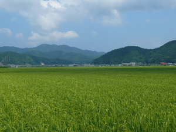

・ Site officiel de la ville de Toyooka (English)
L’histoire unique de Toyo -oka
Toyo -oka possède deux surnoms. L’un est « la ville de cigognes, l’autre, « la ville de sacs ». Il y a de nombreuses fabriques et magasins qui vendent des sacs de toutes sortes. Cette spécialité date du Xème siècle, où les paniers artisanaux fabriqués en saule étaient envoyés à Shosoin, l’entrepôt du trésor à Nara, comme cadeaux à l’empereur. Cette coutume est devenue l’industrie de cette région. Aujourd’hui, on y fabrique majoritairement sacs à la mode.
・Musée des sacs (l’histoire de sacs/en japonais)
・Toyo-oka kaban (sacs) official HP (les sacs de la marque authentique de Toyo-oka, fabriqués au Japon à 100 %)
Il y a même une rue nommée « Kaban Street » (la rue des sacs), où se trouvent encore plusieurs magasins. Si vous voulez plus de variétés de sacs, je vous suggère d’aller visiter une usine de sacs, comme Kaban no Yakata (Maison de sacs).
L’industrie étant vraiment importante pour la ville, une fête appelée « Yanagi Matsuri » (fête du saule) est tenue chaque année les 1er et 2 août, avec de magnifiques feux d’artifice.
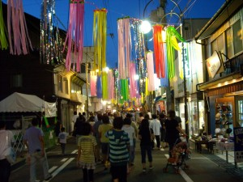
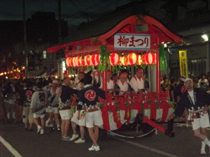
Comme mentionné précédemment, l’autre nom donné à ma ville est « ville de la cigogne ». Ces cigognes sont un peu différentes que celles des pays occidentaux, elles sont d’ailleurs classées comme cigognes orientales. Symbole du département de Hyogo, elles sont enregistrées comme patrimoine naturel national.
Autrefois, ces oiseaux étaient partout dans la région Tajima. Mais à cause du développement industriel, ils ont tous disparu dans les années 1970. Aujourd’hui, les gens de Toyo -oka travaillent dur pour sauver ces oiseaux, en protégeant l’environnement naturel. C’est pour cela que ma ville, bien que petite, attire beaucoup d’attention de l’ensemble du Japon.

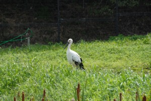
Je vois souvent quelques cigognes voler dans le ciel ou marcher dans les rizières.
・Park of storks (l’histoire de cigognes/en japonais)
・Diary of storks (cigognes en webcam/en japonais)
Activitités variées
Les gens de Toyo -oka profitent beaucoup de la nature. Dans les montagnes, on s’amuse à faire du ski en hiver et à faire des randonnées en été. Nous avons de belles plages aussi. Si vous êtes fatigués, nous avons des stations thermales. Voilà pourquoi nous avons des touristes toute l’année.
Profitez de la nature ! Faire du ski, ou jouer au foot… comme vous voulez.

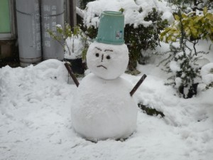
Mon mari est excité même dans la neige!!!
Et en été, le paysage change.
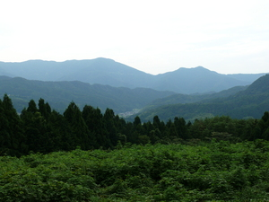

J’adore faire une randonnée à la montagne.
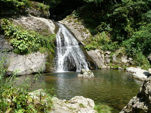
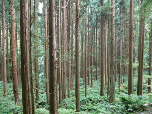
Calme et tranquille.
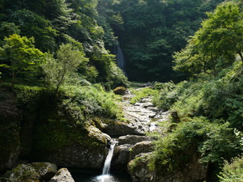

Je ne croise personne en chemin.


La forêt du Japon est très sombre.
・L’Association de tourisme de Toyo -oka (en japonais)
Les sites de tourisme
–Genbudo —
Genbudo est un monument naturel national. Il s’agit d’une grotte formée dans une roche appelée Genbugan. Il y a 1 600 000 ans, du magma a été jeté et refroidi, formant une masse de Genbugan. Ensuite, avec l’érosion voilà 6 000 ans, le Genbugan a été repoussé vers l’extérieur. Les gens ont alors commencé à exploiter la roche et ces grottes ont été formées. Donc, ce n’est pas tout à fait naturel, mais plutôt un champ de mine.


Dans le passé, les gens utilisaient cette roche pour bâtir la base d’un château. Vous pouvez encore trouver quelques maisons avec la même base dans la région.
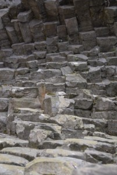
Trouvez plus d’info au Musée de Genbudo (en japonais) .
–Kinosaki —
Ce petit village est l’une des stations balnéaires les plus célèbres du Japon. Vous pouvez y profiter d’un beau paysage bien préservé, et vous y fondre en portant un « yukata » (genre de kimono très léger et simple, porté exclusivement en été). Chaque « ryokan » (un hôtel traditionnel japonais) vous prête un yukata pour votre séjour. Vous ne regretterez pas d’avoir pris des heures pour aller là-bas, lorsque vous serez servis un dîner exceptionnel ! Sur votre assiette, vous aurez une grande variété de spécialités locales.
Certains hôtels sont chers, mais vous pouvez trouver quelques ryokans moins chers ou raisonnables.
Le ryokan Mikiya a une longue histoire. Leurs propriétaires ont entamé leurs affaires à l’époque de l’Edo (XVII-XVIIII), et un romancier japonais très célèbre y a logé et a écrit un roman intitulé « Kinosaki ni te » (A Kinosaki), publié en 1917 .
Le ryokan Tsutaya est un autre hôtel très remarquable. Katsura Kogoro, (un bushi ou samuraï actif dans les dernières années de l’époque de l’Edo), restait ici en se cachant. Opposant, il était poursuivi par le gouvernement d’Edo de l’époque.
・Mikiya Ryokan (en anglais)
・Tsutaya Ryokan (en japonais)
Dans la rue de Kinosaki, il y a de petits bains pour les pieds, « Ashi yu » en japonais : Ashi pour les jambes, et yu pour eau chaude. La photo à droite montre la source des eaux thermales. On peut y cuire des œufs ! On appelle ces œufs « onsen tamago ».
Au total, il y a 7 stations thermales majeures, appelées « soto yu ». Un Soto yu est ouvert pour tout le monde, il s’agit d’un osen public. Donc, même sans faire un séjour dans la ville, vous pouvez profiter des bains des soto yu. Chaque bain a des propriétés différentes pour la santé.
・Office du tourisme de Kinosaki (en anglais)
Chaque année beaucoup de gens visitent ce village, en particulière en été pour profiter de la grande fête avec des feux d’artifice. On découvre aussi un panorama splendide du sommet du montagne. Vous pouvez y accéder par téléphérique.
・Téléphérique de Kinosaki (en japonais)
En allant un peu plus loin vers la mer (accessible seulement en voiture ou en bus), vous trouverez un autre site touristique : le grand aquarium Kinosaki Marine World. Il offre de nombreux divertissements aux visiteurs, avec des spectacles d’animaux marins.

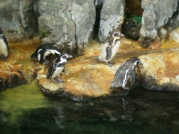

Passez un bon moment à Kinosaki !
–Izushi —
Cette ville est surnommée la petite Kyoto. Les maisons et magasins ont été bien préservés, et les ruines du château d’Izushi se trouvent sur le flanc de la montagne. Aujourd’hui, il n’en reste presque plus rien, mais de la colline on peut découvrir un beau panorama de la ville. La spécialité locale à ne pas manquer, ce sont les soba (pâtes de sarrasin). Il y a des restaurants de soba partout dans cette petite ville, à tel point qu’il est difficile de faire un choix.
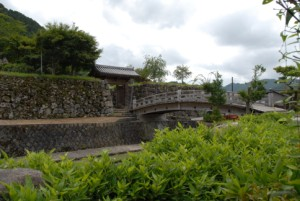
L’histoire d’Izushi: A l’époque du Muromachi (1336-1467), le clan de Yamana était très puissant dans la région de San-in (englobant la région de Tajima). Izushi fût bâtie par Tokiyoshi Yamana en 1372. Le château de l’époque était appelé Konosumiyama -jo. La famille du clan Yamana résida dans ce château pendant plus de 200 ans. Mais Hideyoshi Hashiba (ou Hideyoshi Toyotomi qui devait gouverner le Japon plus tard, entre 1536 et 1598) attaqua et conquis Izushi en 1569. Suketoyo Yamana construisi un autre château, Ariko -jo, dans le Mont Ariko, mais celui-ci fût aussi conquis par Hideyoshi.
Pendant un temps, ce château fut maintenu par de simples gardiens. Il fut ensuite réoccupé, mais par Koide Yoshimasa, daimyo (seigneur féodal pendant les 15e et 16e siècles) et cousin de Hideyoshi. Le clan du Koide se divisa en deux parties au moment de la bataille de Sekigahara. Cette bataille mena à de grands changements dans l’histoire du Japon. Ce fut la chute de Hideyoshi et le début du règne d’un nouveau shogun, Tokugawa. Yoshimasa Koide était du côté de Hideyoshi, mais son frère Hideie avait rejoint Tokugawa. Cette stratégie fut établie afin que, quel que soit le vainqueur, le clan puisse profiter de la situation. Ainsi, Hideie intervint auprès de Tokugawa pour gracier son frère et la situation du clan à Izushi s’en trouva sécurisée.
En 1604, le château Ariko -jo fut abandonné par Yoshihide Koide, et un nouveau château fût bâti et le village commença à se développer.
En 1696, le dernier héritier de la famille, Fusatsugu Koide mourut à l’âge de trois ans. Tadachika Matsudaira fût envoyé pour prendre la place de la famille Koide. En 1706, après que Tadachika fût affecté dans une autre région, Masaakira Sengoku arriva et devint le nouveau seigneur d’Izushi. C’est lui qui a amena à Izushi les soba, spécialité de sa région d’origine, Nagano.
Le clan de Sengoku demeura ensuite jusqu’à la fin du système féodal (début du XIXe, ère Meiji).
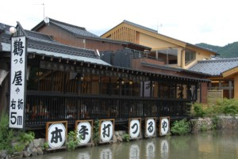
Partout : soba, soba, soba !
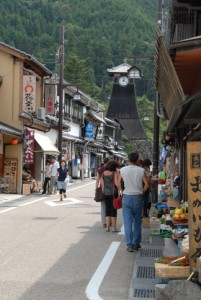
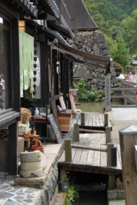
Une tour surmontée d’une horloge. Les gens l’appellent « Shinkoro ». Avant, les gens entendaient le tambour joué de cette tour, qui les prévenait de la présence du daimyo. L’horloge fut ajoutée plus tard. Un docteur, nommé Ikeda, tomba gravement malade, et beaucoup de gens d’Izushi ont prièrent pour qu’il guérisse. Il se rétablit et voulu exprimer sa gratitude en offrant cette horloge en 1881.

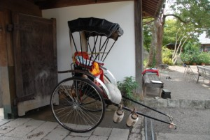
Ci-dessus, les entrepôts de saké, dont les murs sont fabriqués d’argile. On dit que leur couleur change en fonction de la saison. Izushi est aussi connu pour son saké original, Sasazuru.

Soba-sho : C’est notre restaurant de soba favori. Tous les ingrédients sont frais. Ils servent des pâtes dans des assiettes spéciales en poterie d’Izushi, Izushi-yaki.
Site officiel de Soba-sho (en japonais)


Mori-No-Yakata : Si vous vous intéressez à faire des pâtes de soba, visitez le restaurant, Morinoyakata. Le patron est le maître de soba, et il donne des cours de poterie aussi. Vous apprendrez les bases de poterie et les techniques nécessaires pour chaque étape. C’est très intéressant. Vous pouvez créer un beau cadeau.
Site officiel de Mori-No-Yakata(en japonais)
・Izushi Torist Association (en japonais)
・Soba Association (en japonais)
–Amanohashidate —
Il s’agit d’un des trois sites les plus pittoresques du Japon. Amanohashidate signifie « le pont céleste ». En effet, si l’on regarde ce banc de sable couvert de pins à l’envers (photo ci-dessous), un pont apparaît entre la terre et le ciel.
En été, beaucoup de gens visitent ce petit village pour sa plage, et en hiver, c’est la saison pour profiter des eaux thermales et manger de bonnes choses, comme de fameux fruits de mer.
Pour y accéder, Kitakinki Tango Railroad (le train local) est pratique. Au départ de ma ville, Toyo -oka, il faut à peu près une heure de trajet. C’est très amusant d’être dans ce petit train, tout en regardant le paysage très paisible.


Par ailleurs, un belvédère est accessible en téléphérique ! Les gens regardent de là le paysage à l’envers entre leurs jambes.
Il y a un petit restaurant aussi.
・Amanohashidate Tourism Office (en japonais)
・Kitakinki Tango Railroad (en jappais)
・Tango Peninsula (la région entre Toyo-oka et Amanohashidate/en japonais)
–La mer du Japon —
Les villes et les villages du côté de la mer du Japon sont loin d’être urbanisés. Ils gardent leurs traditions et leur style de la vie. Les paysages sont donc très beaux. Vous trouvez aussi de belles auberges, entourées de nature.
Chaque fois que nous visitons Toyo -oka, nous allons pêcher. Mon mari aime cette activité, peu importe qu’il attrape du poisson ou non.
L’île de Kaeru (grenouille). Arrivez-vous à la distinguer ?
Hasakari Iwa, soit « la roche coincée ».
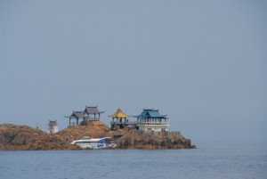
Beaucoup d’endroits sont à découvrir.


Vous pourrez profiter de toutes sortes d’activités : nage, pêche, randonnée, ou camping. En fait, cette région est enregistrée comme parc national.
L’une des plages très fréquentées est la plage de Takeno. Chaque année beaucoup de gens y viennent pendant leurs vacances. A noter, un petit hôtel appelé Takeno-Kaigan National Park Resort Inn.
National Park Resort Villages (NPRV) est une fondation créée par le ministre de l’Environnement. Au total, 36 hôtels sont opérés partout au Japon, tous sont situés proches de la nature sauvage. Vous pouvez réserver une chambre comme dans un hôtel ordinaire. Rien de spécial, si ce n’est de nombreux services et un placement idéal ! Passez de bonnes vacances !
National Park Resort Villages
Homepage (en anglais)
Le tarif d’une chambre est plutôt raisonnable. Voilà quelques photos de l’intérieur d’hôtel.
Très propre, calme, et accueillant.

La cuisine est somptueuse !
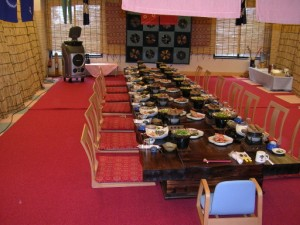

Beau et délicieux.


Une grande variété de plats. Tous les ingrédients sont frais et proviennent de la région.
—Autres spécialités de Toyo -oka—
Tokose soba (un autre restaurant de soba)
Tokose soba est une autre bonne adresse pour vous. Ils servent des pâtes faites maison. C’est excellent ! Ils n’ont pas de chaise ni de table. On s’assoit autour de la cheminée traditionnelle japonaise. L’accès est un peu difficile, parce que ce restaurant se trouve dans un coin vraiment isolé : vous avez besoin d’une voiture. Plus d’info sur leur site.
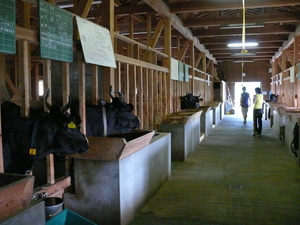
Tajima ushi (bœuf de Tajima)
La région de Tajima offre non seulement des fruits de mer ou les soba, mais aussi du bœuf de grande qualité. Le bœuf de Tajima fourni parmi les meilleurs spécimens de la race Wagyu (les bovins japonais).
Vous avez probablement entendu parler du bœuf de Kobe, dont le prix est très élevé. Ce bœuf est en train de devenir populaire en France.
En fait, le bœuf de Kobe provient du bœuf de Tajima ! Les meilleurs morceaux d’un bœuf de Tajima sont en fait appelés bœuf de Kobe.
Depuis les temps anciens, les bovins de Tajima ont toujours été élevés par des éleveurs locaux : pour preuve, un texte historique de 797, appelé le « Shoku Nihongi”, décrit le bœuf de Tajima comme étant bien adapté pour cultiver la terre, porter des fardeaux et être mangé.
Le bœuf de Tajima est plutôt petit, mais très costaud. Il vit longtemps et se reproduit facilement, d’où leur popularité autrefois pour les tâches quotidiennes.
A l’époque de Meiji, le bœuf de Tajima est devenu célèbre sous le nom de bœuf de Kobe. Certains étrangers qui vivaient alors à Kobe trouvèrent ce bœuf excellent et contribuèrent à le populariser, notamment auprès des autres zones portuaires comme Yokohama. Ainsi, le bœuf de Tajima finit par être surnommé le bœuf de “Kobe”.
Donc, n’oubliez pas que le bœuf de Tajima est à l’origine du bœuf de Kobe !
Goûtez ce bœuf tendre et délicieux, servi à table par certains restaurants ou ryokan.

Restaurant Hamada : Ils servent le meilleur bœuf au Japon ou même dans lo monde !
Umi no Ie restaurant (Restaurant Sea House/en japonais)
Si vous cherchez un bon restaurant de fruits de mer, je recommande le “Umi no Ie”. Il se trouve à mi-chemin entre Toyo -oka et Kinosaki. Il est accolé à un marché couvert, où vous pourrez aussi trouver beaucoup de souvenirs.
Si vous avez l’occasion de venir dans le Kansai, visitez ma ville. Vous y trouverez une autre facette du Japon, peu connue des étrangers.
Ce n’est pas une grande ville, mais si vous aimez la nature, vous apprécierez les diverses activités possibles tout au long de l’année.